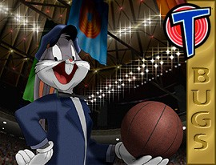

© 1996 Warner Bros.
© 1996 Warner Bros.
The RabbitBugs Bunny, the linchpin of the Looney Tunes, has been called everything from "classic" to "perennial" to "an American institution" to "one of our national heroes"--and "wascally wabbit," "long-eared galoot," and a lot of other things besides! But most of us just like to call him Bugs.
Now he's starring in Space Jam, Warner Bros.' first original feature film graced by Bugs in a leading role--opposite Michael Jordan, no less! Producer Ivan Reitman and director Joe Pytka head a team of filmmakers including producers Joe Medjuck and Daniel Goldberg, executive producers Ken Ross and David Falk, and screenwriters Leo Benvenuti & Steve Rudnick and Timothy Harris & Herschel Weingrod to bring this ambitious and precedent-setting project to life. Starring with Bugs and Michael Jordan are Wayne Knight, Theresa Randle and the voice of Danny DeVito.
Heading the bill in Space Jam with one of the sports world's most entertaining players is a natural opportunity for the venerable Warner Bros. character. After all, Bugs was voted the most popular in the entire short-subject field in the United States and Canada for the year 1945, and then stayed in the Number One spot for the next 16 years straight. Today, in 1996, Bugs continues to draw a crowd--in fact, a recent survey showed him to be the most popular animated character in the world!
When Bugs' classic cartoons were being made and regularly released to theaters in the 1940s and 1950s, it was his stardom in short subjects that skyrocketed his studio to prominence in the animation field.
Part of Bugs' great achievement had been to establish a strong personality who can exist for 7 minutes at a time, show us a facet of his personality, disappear for weeks, months, maybe years at a time, then reappear and still be recognizeable and entertaining. His possibilities were not exhausted by any single episode.
The trick was not to sustain seven minutes, but to live for 50 years. And once you've sustained 56 years of amazing popularity with one generation after another all over the world, it's hardly likely you're going to have much trouble sustaining a 90 minute feature.
Michael Maltese, one of Bugs' writers, remembered that in the old days, a theater's marquee had to say no more than "2 Bugs Bunny Cartoons" for people to plunk their money down--forgetting what features or other short subjects were playing, forgetting that the "2 Bugs Bunny Cartoons" would be over in 15 minutes--and, most of all, forgetting their troubles. "After a while, Bugs Bunny was so well loved by the audience that he could do no wrong," said Maltese. "They loved the rabbit, and what he stood for."
Friz Freleng, one of the leading directors of Bugs' classic shorts, once remarked, "The cocky characters, for some reason, the public seems to like. They don't like those kinds of people in real life." Mel Blanc, who first provided The Rabbit's voice, believed that "Bugs Bunny appeals to the rebel in all of us. Everybody loves a winner, and Bugs Bunny always wins."
There's a moment in A Hare Grows in Manhattan when Bugs dives into a manhole to escape the bulldog pursuing him, and between the time the dog leaps in the air and the time he reaches the manhole, Bugs has managed to resurface, grab the manhole cover, and pull it into place--turning the dog's face into something resembling a waffle. It's a simple enough gag, but the point is that there is a look of such total delight on Bugs' face as he performs the act, that he turns the whole business into something else altogether, a conflict of viewpoints rather than a physical conflict between two animals.
Bugs is Puck reborn; he enjoys the scrapes he gets into because he knows he'll win eventually. This goes a long way toward making him the irresistible character he is: he holds out the possibility that the Battle is winnable, that we can vanquish the foe and have fun doing it, that every setback can become another challenge, another excuse for high spirits.
This is possibly the critical factor of what we love about Bugs: that he will not only make us laugh but make us feel victorious and triumphant. There are heroes and there are comedians; rarely do the two meet. This made him a difficult character to write for, but it's what gave him that special spark that made him the phenomenon that he has been.
From the time he first asked Elmer Fudd "What's up, Doc?" right up to the release of Space Jam, Bugs has been both sophisticated and naive, innocent and guilty, Child of Nature and Street-Tough Smart Guy, fool and hero, one of the most rounded and all-around characters in the history of film, a multi-faceted gem.
A Wild Hare and Beyond
The hardy hare has been delighting fans of every age, nationality, and persuasion for longer than the majority of his youthful fans probably realize. Most of the current crop of screen heroes were not even born when Bugs first rose casually from his rabbit hole, chewing on a carrot, peering down the barrel of a gun, and cracking a cool "Eh-h-h-h-What's up. Doc?" out of one corner of his mouth, in a cartoon called A Wild Hare, directed by Tex Avery and released by Warner Bros. in July of 1940.
Bugs, like most characters, inspires that insistent question, "Who created him?" A simple answer is expected. But no simple answer works.
The clearest family line reaches back to Tex Avery, who gave The Rabbit his famous personality. When asked how Bugs came into being, the soft-spoken Texan was laconic. "Oh," he said, "it just came out of a cartoon. We decided he was going to be a smartaleck rabbit, but casual about it, and his opening line in the very first one was `Eh, what's up, Doc?' And, gee, it floored `em! They expected the rabbit to scream, or anything but make a casual remark--here's a guy with a gun in his face! It got such a laugh that we said, `Boy, we'll do that every chance we get.' It became a series of `What's up, Docs?'."
"We didn't feel that we had anything until we got it on the screen and it got quite a few laughs," Avery recalled. "When we saw that on the screen, we knew we had a hit character," Freleng remembered. "He was the most timid of animals, yet he had courage and brashness. The whole gimmick was a rabbit so cocky that he wasn't afraid of a guy with a gun who was hunting him."
But the new character had no name at first. Jack Rabbit, or Jack E. Rabbit, was the personal choice of Avery himself, since he had spent so much time hunting jackrabbits and since "I thought it would please my Texas friends."
But another of the Warner cartoon directors, Ben Hardaway, whose nickname was "Bugs," had already asked designer Charlie Thorsen to create a rabbit for an earlier cartoon, and when Thorsen had submitted the model sheet, he'd labeled it "Bugs' Bunny." Now, with this model sheet circulating the studio, and with a search for a good name underway, publicist Rose Horsely jumped on the label "Bugs Bunny" as "so cute!"
It wasn't "cute" to Tex Avery. "That's sissy," he said. "Mine's a rabbit! A tall, lanky, mean rabbit. He isn't a fuzzy little bunny."
But Horsely had the ear of Leon Schlesinger, who produced the cartoons for Warner Bros. Schlesinger thought a moment, then said, "O.K. Bugs Bunny. We'll go with it."
"We were always very proud of what we were doing there," says Phil Monroe, one of the Warner animators. "We thought our pictures were funnier than anybody else's. We were all geared for humor--the animators would be asked to submit gags for pictures, and a lot of them were used." A new style was developing: most of it was Avery's doing, most of it was taking place right there at Warner Bros., and most of it was focused on The Rabbit.
Finally the directors realized you couldn't look down on this character, the way you could with most cartoon clowns. You could only look up to him. It was at that point that Bugs came to life, individually, for each of the directors at Warner Bros., and, better than that, became a focal point for everything they saw as the best in themselves.
Almost as soon as they started working with the character, the Bob Clampett unit, with McKimson in the lead, started giving Bugs less of an oval shape than the first model sheets called for, and his face began to look less ratlike. Then they started structuring the nose differently, and the teeth were naturally anchored to the same bone structure, in a more appealing facial design. By the time Clampett made Bugs Bunny Gets the Boid in 1942, he had arrived at what we might call the Classic Bugs Bunny. By late 1944 the same design was reaching the screen in the cartoons of the other units. Once Freleng made Stage Door Cartoon, released near the end of that year, the McKimson look was universal.
"Bugs was gradually becoming a more complex character," Chuck Jones remembers. "The writers and directors were all beginning to realize that we had the potential of a brilliant and lasting star on our hands, a rambunctious, unbridled, and often balky baby Bugs that needed now to grow, to smooth out; we must find out how to harness that energy without destroying the spirit and how to guide the child without steering it. Bugs changed because he had to, not because we were brilliant."
Bugs, madder than the March Hare and saner than Alice, knows he's in a cartoon. He always had a trick, and he always had the prop that was necessary to pull of that trick. Whatever it was--a sledgehammer, a stick of dynamite, an anvil, a cannon--he needed it, he got it? Where did it come from? Nobody wanted to know, they just wanted to see him pull off his fast one.
Bugs was the cartoon version of the loud-mouthed but loveable Brooklynese smart-aleck who turns up in the cockpit, in the barracks, or on the battlefield in every World War II movie, as inevitable as the flag, and, apparently, just as effective in rallying the spirits of a beleaguered nation. The idea that the battle was winnable was a very popular one during World War II.
"It was during those war years...that the Bugs Bunny cartoons...passed Disney and MGM for the first time to become the Number One short subject," Bob Clampett recalled.
The studio received an offer from the Utah Celery Company of Salt Lake City to keep all staffers well supplied with their product if Bugs would only switch from carrots to their crunchy greens. Later the Broccoli Institute of America strongly urged The Bunny to sample their product once in a while. It never happened. Mel Blanc would have been happy to switch to any of these vegetables, since carrots made his throat muscles tighten and the words couldn't come out, but it was no go. Carrots were Bugs' trademark. The only concession they ever made was to move the carrot-crunching sounds and dialog to the last spot in the recording session.
In the 1950s, with the post-war Baby Boom transforming his previous audience from rowdy kids in uniform to mature adults with responsibilities, Bugs found his new audience extended to include those "responsibilities." The nation was filling its nurseries and schools to capacity with children, and they were all becoming Bugs Bunny fans.
By 1957 Bugs' perennial popularity had become as much a bewilderment as a source of pride. The theatrical short subject market had gone through a series of drastic changes, Bugs' contemporaries from the early `40s had largely faded from the scene, even Disney had phased out the one-reel cartoon, and television was posing new threats every year. The world of 1940 was becoming history.
Didn't matter. Bugs went on being Champ, no matter what he did.
© 1996 Warner Bros.